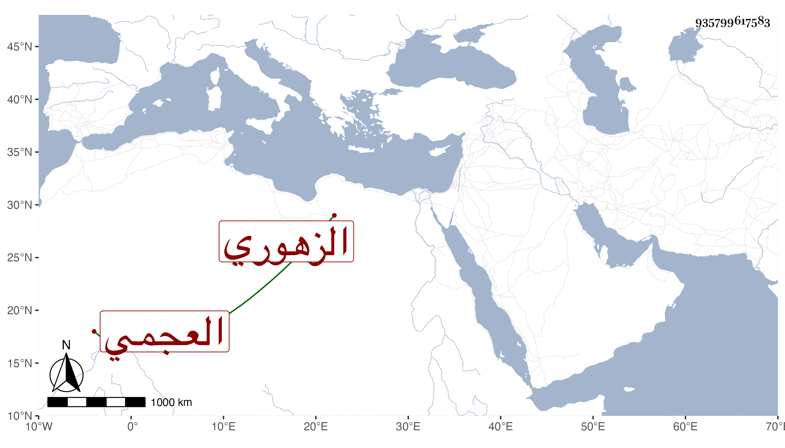

0902Sakhawi.DawLamic.ITO20230111-ara1.EIS1600.935799617583
Biography ID: 935799617583
280
محمد بن عبد الله الزهوري العجمي . ممن يعتقد للظاهر برقوق فمن بعده ويسمى مجذوبا . كانت غالب إقامته بقلعة الجبل في دور حرم السلطان ويقال إنه قال له يا برقوق أنا آكل فراريج وأنت تأكل دجاجا وأنه أشار بموته ثم يموت برقوق من بعده بمقدار ما يكبر الفروج فكان كذلك ، وربما نسبت هذه المقالة لمحمد بن سلامة النويري المغربي المعروف بالسكندري أحد أخصاء الظاهر أيضا مات في أول صفر سنة إحدى . وقيل إن الظاهر لما مات داخله الوهم فلم يلبث أن مات في شوالها .
